One library · many résumés · Typst in the browser
The same career, cut two ways.
quikResume keeps your whole professional history in one library and rebuilds the résumé from whatever is switched on. Both sheets below came out of the same 22 items, minutes apart, typeset by Typst compiled to WebAssembly inside the browser — the résumé text never reaches a rendering server.
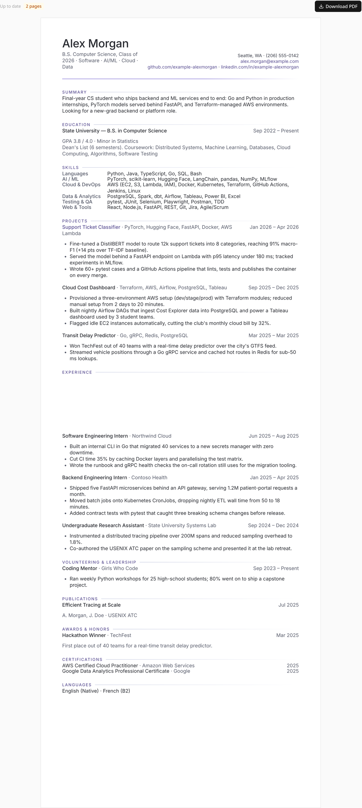
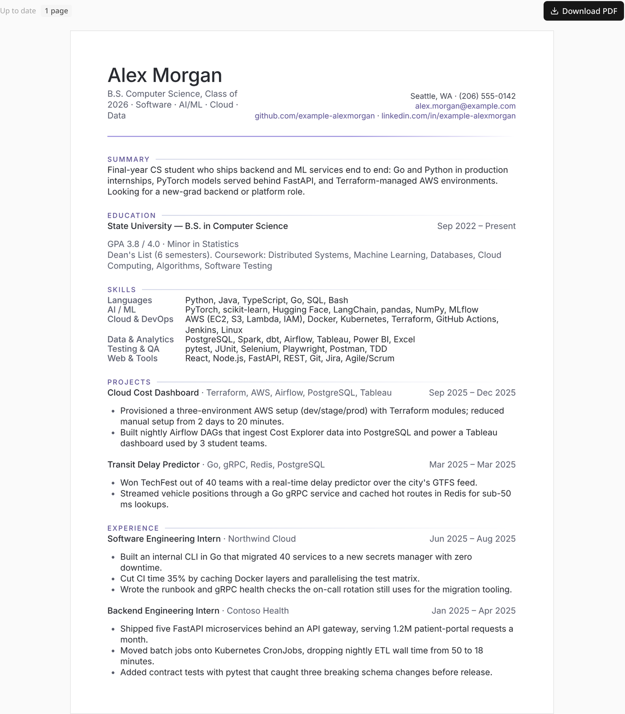
Click either sheet to enlarge. Both are real compiler output, not mock-ups.
The example user
Everything here belongs to a candidate who does not exist.
Alex Morgan is a fixture. The screenshots were taken against a throwaway account in a local Firestore emulator, so no real person's history appears anywhere on this page — but every number the app computes from that library is genuine.
Alex Morgan
B.S. Computer Science, Class of 2026 · Seattle, WA · targeting new-grad backend and platform roles
Two production internships — Go tooling and a 40-service secrets migration at Northwind Cloud, five FastAPI microservices and Kubernetes CronJobs at Contoso Health — plus a systems-lab stint that produced a USENIX ATC paper, three projects, an AWS certificate, a hackathon win, a mentoring role, and a coffee-shop job from before university that is switched off for engineering applications.
- Experience
- 4
- Education
- 1
- Skill categories
- 6
- Projects
- 3
- Certifications
- 3
- Awards · volunteering
- 1 · 1
- Publications · languages
- 1 · 2
- Library items
- 22
- Extracted tags
- 80
- Saved variants
- 3
The tour
Nine features, each with the mechanism behind it.
Every panel states what you get in plain language, shows the real screen, and then opens up the actual implementation — file paths included.
Nothing is ever retyped. Flip switches per application: this internship on, the coffee-shop job off, these three bullets yes, the fourth no.
The dimmed Barista row stays in the library for retail
applications but will not print here. The yellow card at the top is the app pointing out that
this one item is dragging the résumé down.
How it works Three levels of granularity
item.isSelected // whole item, the row switch item.hidden[] // one bullet → bulletKey(text) item.hidden[] // one skill → skillKey(text)
bulletKey is the whitespace-squashed text of the printed line,
never an index (src/lib/sub-items.ts). Reordering bullets therefore can
never hide the wrong one, and rewording a hidden line brings it back on purpose.
saveResumeData runs pruneHidden(...) so keys whose text is
gone are dropped rather than left to rot.
Toggling costs nothing: hidden and isSelected are excluded
from the content hash, so switching items on and off never re-triggers the AI tagger.
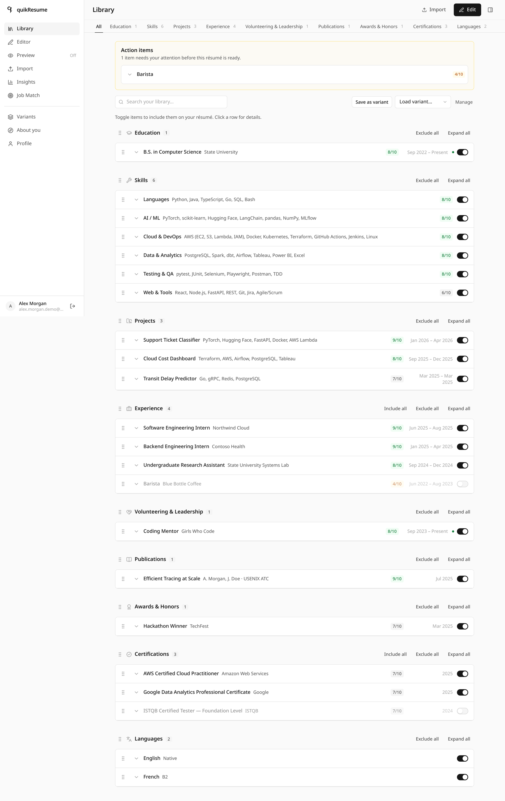
/dashboard · 22 items across 9 sections
What you see is the PDF. Not an HTML lookalike — the actual Typst document, recompiled about a third of a second after you stop typing, with a text-based download an applicant tracking system can parse.
The page count in the toolbar is measured from the compiled document, not estimated — and it is the number the Tailor window works against.
How it works One JSON contract, one wasm engine
ResumeData → toTypstDoc() // the ONLY place data is shaped → TypstResumeDoc // plain JSON, every field a string → sys.inputs.resume // main.typ → templates/ledger.typ render(data) → typst-ts-web-compiler (~27 MB wasm) → compileSvg() preview | compilePdf() download
Templates are pure styling: no filtering, no date logic, and they never receive markup.
Because every field arrives as a plain string, user text containing
# * _ $ [ ] \ needs no escaping — it is printed literally.
The engine initialises once, lazily, when the preview first mounts; the vendored Inter faces are preloaded and remote font assets disabled, so output is byte-stable across machines. The wasm is single-threaded, so compiles are serialised through one promise chain, and the last good SVG stays on screen at 60% opacity while a new one renders.
If the engine fails to load, the app says so in its own panel — and states explicitly that nothing in your résumé was filtered or rejected.
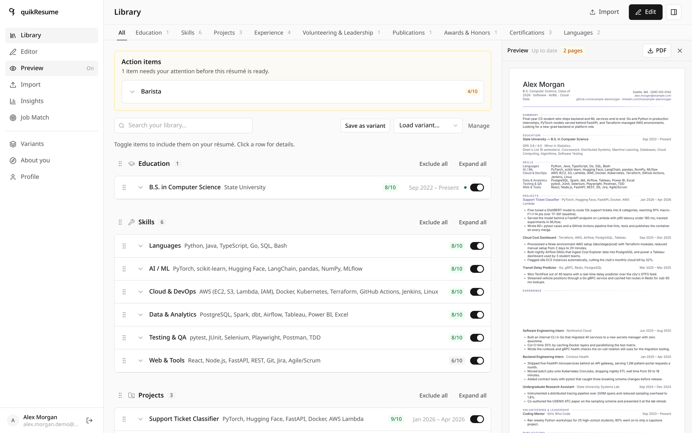
The preview docks beside the library at ≥ 1280 px · resizable splitter
Paste the posting, get an honest number. Which must-haves you cover, which single one disqualifies you, which keywords are missing — and separately, whether the words are literally printed on the page a scanner will read.
Alex scores 84. The blocker is C++, called out in red instead of averaged
away. Four rows say Not literally: Alex has the skill, but the exact
string is not on the page.
How it works Coverage, inference, and the ATS check
An item covers a requirement when it carries the exact canonical tag
key, a key the requirement's satisfiedBy list accepts, a key the built-in
hierarchy accepts (bachelor's degree ← any bachelor of …),
or is cited by item id in evidence.
The last two come from the reconcile pass
(src/lib/match/reconcile.ts): the text model receives all requirements
plus the whole tag inventory at max reasoning effort, and its verdict is stored
on the requirement — so the pure scorer honours it on every later recompute
with no further model calls. It runs in the background; if it fails, requirements stay
untouched and the built-in hierarchy still applies.
That is how Alex's résumé matches Microservices without ever using the
word: the pass read "five FastAPI microservices behind an API gateway" and recorded the
evidence.
literalHit searches renderedText(toTypstDoc(data)) — the exact
strings Typst prints, with hidden bullets and excluded items removed. Hence the honest
split between "in your tags" and "printed on résumé".
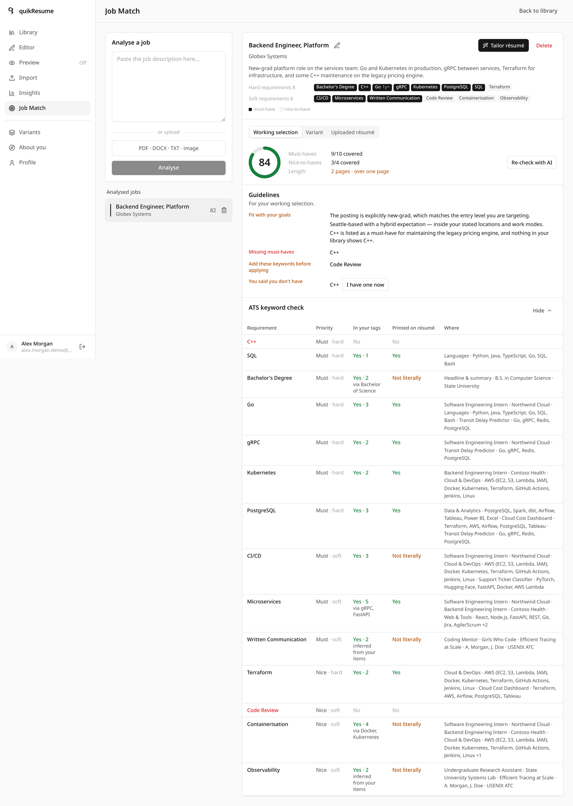
?view=jobs · 14 requirements extracted from the posting
It suggests; you decide. Tailor asks about the gaps first, proposes a selection with a reason on every line, marks what it will not touch, and leaves each suggestion as an Accept or Dismiss you can overrule.
🔒 marks items that cover a hard requirement. One click on
Fit to one page took Alex from 20 items on two pages to 11 on one — and
told him the price: 84 → 79, with no must-have lost.
How it works Locks, protected lines, and a filtered model reply
lock items covering a hard requirement (+ newest education)
recommendSelection() // greedy weighted set cover, soft reqs
mark lines naming a hard requirement as protected
→ AUTO_TAILOR_SYSTEM_PROMPT (high effort, 180 s)
→ mergeAiReview() // DROPS anything touching a locked
// include, a protected line, or an
// id/index that does not exist
→ fitToOnePage()
→ diffSuggestions(plan, target, base)
The plan is a pure function; the model only ever adjusts it, and its reply is filtered rather than trusted. A total model failure degrades to the tag-based plan plus a warning — never a broken selection.
The trim order is fixed and predictable: bullets of weak unlocked items → those items → unprotected bullets of locked items. The first bullet of a kept item is never removed, so no entry is reduced to a bare job title.
Overrides always win. Switch off a locked item and
overrideWarnings explains the consequence in yellow instead of blocking
you.
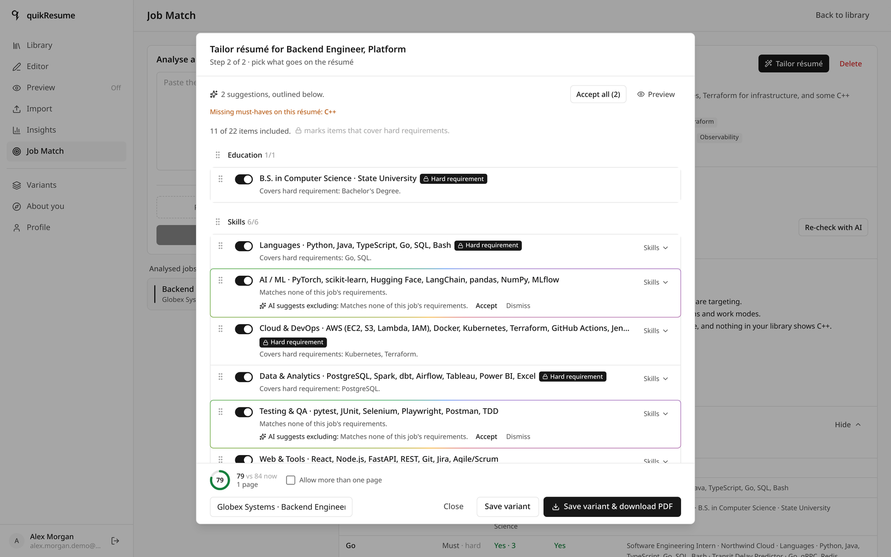
Step 2 of 2, after Fit to one page
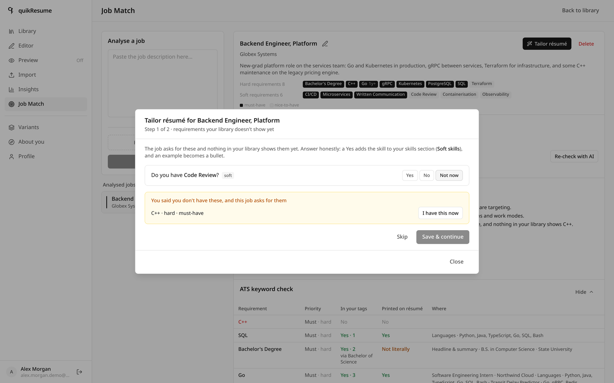
Step 1 of 2 · a "no" is remembered, and warned about later
Line-by-line feedback, not a grade. Every item gets a score out of ten, named problems, and up to three rewrites where your original is quoted verbatim and the replacement sits right below it.
This is the coffee-shop bullet: 4/10, flagged
Off target · Passive voice ·
No numbers, with a fix that leads with the verb — and the honest advice
to leave the item switched off for backend applications.
How it works The rule that stops invented metrics
Reviews run fire-and-forget and are never awaited by a save. The route takes a per-user
lock (meta/review.runningUntil), then reviews ≤ 24 items per request —
selected first — in chunks of 6, two in parallel, at high effort inside a
260 s budget.
The parser (src/lib/review/parse.ts) is adversarial on purpose. A
suggestion is discarded if it targets a field that does not exist for that section, if
its current text is not found verbatim in the item, if the rewrite is
empty, unchanged or bracketed — and, decisively:
// a rewrite may not introduce digits the original lacked if ([...digits(proposed)].some(d => !known.has(d))) return null;
That one rule is what stops a language model from inventing "improved performance by 40%" on your behalf.
Staleness uses the same content hash as the tagger, so a review greys out and says so the moment you edit the text — rather than showing an old number as if it were current.
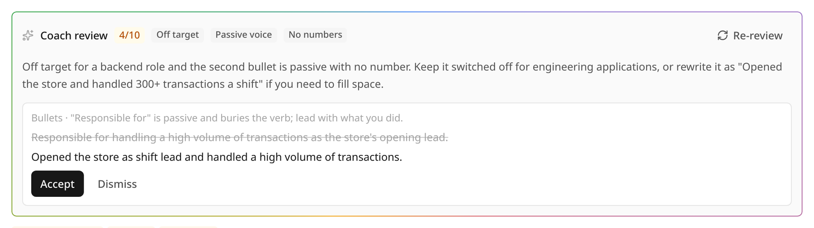
The rainbow hairline is the app's own marker for an AI-produced surface
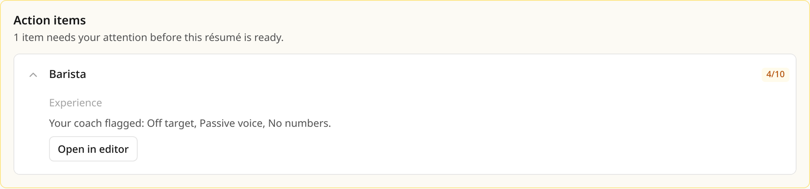
Low scores surface where you cannot miss them
Start from what you already have. Drop in your current PDF, a Word file, or a photo of a printout. It is read, split into sections, and matched against what is already in your library — merging detail instead of creating near-duplicates.
Nothing is saved until you have reviewed every row; each one is labelled
New, Adds detail or
Already in library.
How it works Rasterise locally, match deterministically
PDFs are rendered to JPEG in your browser by pdf.js before upload, because the
vision model accepts text and image_url parts but rejects
file parts outright. It is a Route Handler rather than a server action for
two concrete reasons: server actions cap bodies at 1 MB, and the route needs
maxDuration = 120.
Duplicate detection is not AI (src/lib/import/match.ts):
canon lowercases, strips accents and punctuation, expands abbreviations
(Sr., B.S., Ph.D.) and drops company suffixes;
titles match on token Dice ≥ 0.8, and work experience additionally requires the same
start year. Matches then merge — bullets and skill lists unioned, empty scalar
fields filled.
Parsing is lenient by design: the envelope never fails, each item is validated on its own, and rejects become warnings shown in the review step instead of failing the upload.
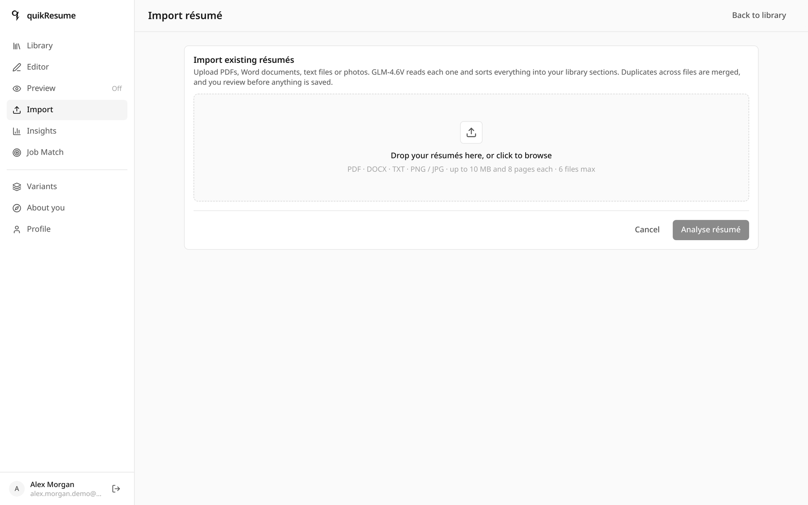
?view=import · up to 6 files per session, deduplicated across all of them
The same bullet deserves different advice depending on who wrote it. A two-minute questionnaire is condensed into a short candidate brief that every coaching and tailoring prompt receives — and that is never printed on the résumé.
Look at the hint under Years of professional experience: "Your library dates add up to 1.5 (internships not counted)". The app computed that from stored dates before any model was involved.
How it works Computed facts first, model second
Date-derived facts are local and instant: yearsOfExperience merges
overlapping roles and excludes internships; employmentGaps counts from the
first non-internship job. Only then does the model suggest the subjective fields — and
it is never allowed to guess your location or work authorization. Suggested values stay
visibly marked until you touch them.
The brief is regenerated only when the answers hash changes, and a failed generation keeps the old brief rather than leaving you with none.
It is read server-side only — the client never sends it — and every prompt that receives
it appends CANDIDATE_CONTEXT_RULE: context for relevance and level, never
evidence, never printed. Tagging and import do not receive it at all.
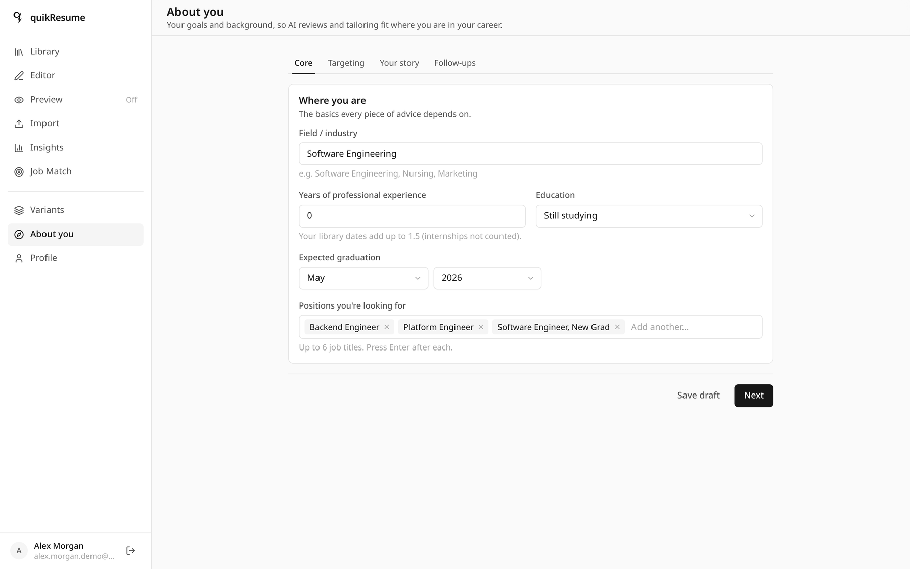
/dashboard/about · four steps, all skippable
When one line of overflow is all that stands between you and one page. Margins, font size, leading, space above and below each section, the gap between entries, per-item spacing, keep-together and page breaks.
Each control is Compact · Normal · Relaxed · Custom, where Normal is exactly the template's own values — so an untouched layout renders identically to one that was never opened.
How it works One ordering function, one working layout
users/{uid}/meta/layout
sectionOrder[] // header always first
itemOrder{} // absent = order by date
page // margin mm · font pt · leading em
sections{} // above · below · itemGap · indent (pt)
items{} // spaceAfter · breakBefore · keepTogether
orderedItems (src/lib/layout/order.ts) is used by the editor,
the library, the tailor window and toTypstDoc — so what you drag
is what prints. The default is newest-first: current items, then latest end date, then
latest start, undated last.
Writes use a plain set rather than a merge, because a merge would
resurrect the very keys a reset was supposed to remove.
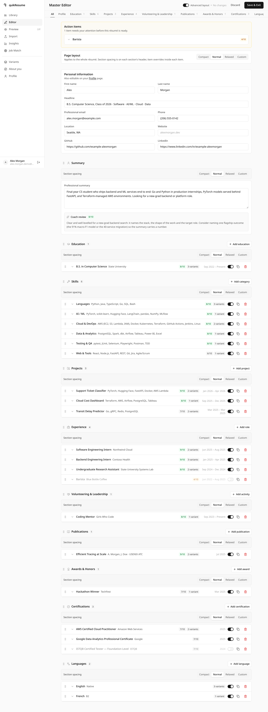
?view=editor · advanced layout mode
Save a selection, reload it in one click. Alex keeps three: backend/platform, ML/research, and a one-page general version. Each remembers which items were on, which bullets were hidden, and the full layout.
Fixing a typo once fixes it in all three — a variant stores pointers, not copies. The editor knows, and asks before saving an edit that several variants share.
How it works Pointers, and one document read to load
users/{uid}/variants/{id}
{ name, labels[],
items: { experience: ["exp-northwind", …], skills: […] },
hidden: { "exp-northwind": ["…bulletKey…"] },
layout: ResumeLayout | null,
templateId: "ledger" }
Loading one is a single document read; applyVariantSelection then reads the
current isSelected and hidden values and writes back
only the documents that actually change.
Every id inside items must match [A-Za-z0-9_-]{1,128}, so a
path can never be smuggled into a doc() call. Variants saved before layouts
existed carry layout: null and leave your working layout alone.
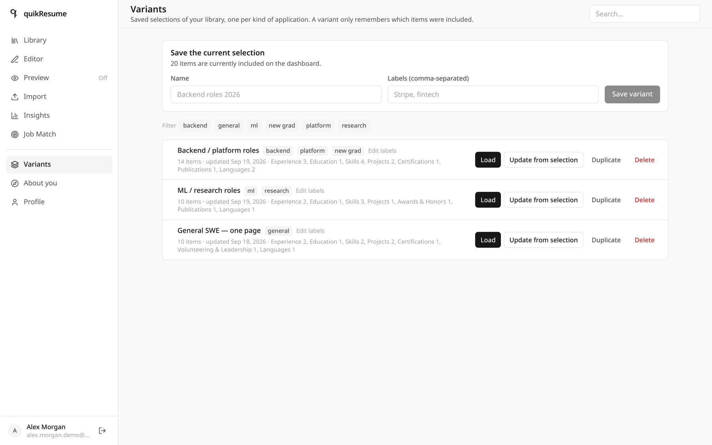
/dashboard/variants · labels, rename, duplicate, load
Interactive · the real formula
Alex scores 84. Here is the arithmetic — change it yourself.
These are the 14 requirements the app extracted from the Globex posting, with the coverage it actually
found in Alex's library. Toggle any requirement's coverage and the score recomputes with
src/lib/match/score.ts — the same pure function the app runs in the browser.
- Must-haves covered
- 9 / 10
- Nice-to-haves covered
- 3 / 4
- Missing must-haves
- C++
w = importance × tier. must = 1, nice = 0.4; hard = 1, soft = 0.3. A missing hard must-have costs about eleven points; a missing soft nice-to-have costs less than two. That is the whole point of the tier weight — a posting listing "attention to detail" as a technical requirement cannot sink your score, and ten soft-skill hits cannot hide a missing language.
| On | Requirement | Carriers | Strength | w × s |
|---|
Credentials and languages are binary — any carrier scores 1.0, because a degree is not
"more true" when two items mention it. Everything else is
min(1, 0.5 + 0.25 × carriers).
All-in-one insights
80 tags, and the shape they make.
Every item — and the profile headline and summary — is tagged by kind. A tag's weight is simply how many included items carry it, computed on read so it can never go stale. The shape is the story: Alex is heavy on tools and thin on soft skills, exactly as you would expect from a student with two internships, and worth knowing before writing a cover letter.
Alex Morgan's library, by tag kind
Distinct tags per kind · 80 total
Hover a bar for its share.
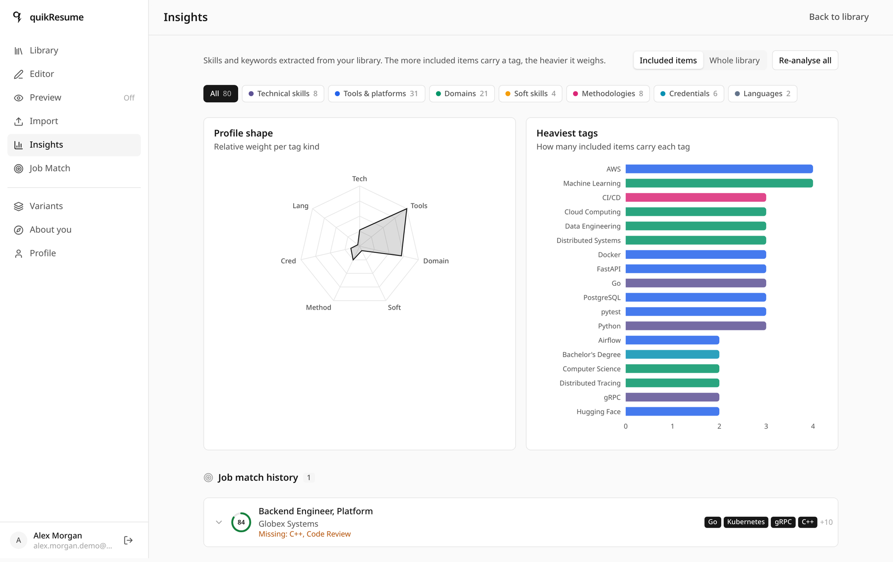
?view=insights · the same data, in the app
How it works The hash rule that keeps AI cost near zero
contentHash = stableHash(`${key}|${JSON.stringify(contentFields(key, item))}`)
// contentFields excludes dates, ids, isSelected, timestamps and hidden[]
stale = tagsHash !== contentHash // only stale items are ever sent to a model
Toggling an item, reordering sections, hiding a bullet, loading a variant — none of that changes the content hash, so none of it costs a single token. Editing the text does.
Extraction runs inside the save: stale items go out in chunks of 20, three chunks in parallel, 60-second
budget, JSON mode, low reasoning effort (≈ 7 s per chunk). Each chunk carries a small
context — headline, degrees, summary — so the model can file items under the candidate's actual
field, and the prompt asks for implied concepts as well as named ones: a five-service
architecture yields Microservices; a degree yields both the specific degree and the generic
Bachelor's Degree that postings ask for. A tagging failure never blocks the save.
Normalisation is a lowercase canonical key plus a built-in alias table
(js → javascript, k8s → kubernetes) and model-reported aliases stored per
user — accepted only when the canonical form is itself a returned tag name, and never allowed to
override a built-in.
One application, end to end
From an old PDF to a tailored one-page résumé.
The order matters: each step's output is the next step's input, and the two expensive AI passes run in the background so no click ever waits on them.
Import
The old résumé is read, deduplicated and dropped into the editor draft. Nothing is saved yet.
→ 22 reviewable itemsSave & Exit
Stale items are tagged inline; coach reviews are kicked off fire-and-forget.
→ 80 tags · scores per itemJob Match
The posting becomes 14 structured requirements, scored against the working selection in the browser.
→ 84 / 100 · C++ missingReconcile
A background pass at max effort records what a human reader would have inferred.
→ Microservices ← gRPC, FastAPIQuestions
Tailor asks about requirements nothing in the library shows. Answers are kept for next time.
→ "no" to C++, rememberedPlan
A locked, reasoned selection: 20 of 22 items, each line explaining itself.
→ 2 pages, nothing lostFit to one page
The trim order runs until the compiled page count is 1, and reports the cost.
→ 11 items · 1 page · 79Save & download
The PDF is compiled in the browser, then the selection is stored as a reusable variant.
→ a real text PDFData protection
Your résumé is not a marketing asset.
No public client access to the database, no telemetry on your content, no résumé text sent to a rendering service, and an explicit rule in every prompt that your words are data — not instructions.
No client touches the database
Every read and write goes through the Admin SDK on the server. There is no client Firebase config in the bundle at all.
firestore.rules → allow read, write: if false — on both databasesTypesetting never leaves your machine
The PDF is produced in your browser from your data. No server receives the document, because there is nothing to send.
typst.ts wasm · only the engine itself is fetched, from your own originTwo email addresses, on purpose
Your Google sign-in address is never printed. The one on the résumé is a separate field, and the login page says so.
users/{uid}.professionalEmail ≠ .emailUploads are treated as hostile
Hidden, zero-width and bidi characters are stripped; free text is fenced; structured input is JSON, never concatenated into a prompt.
sanitizeForPrompt · fenceUserText · UNTRUSTED_INPUT_RULEA hard ceiling on AI spend
Per user, per UTC day, counted from real token usage — and a call made without an attributed user logs a warning in production.
2 M tokens · 400 calls · AsyncLocalStorage contextLink checks that cannot become a scanner
A DNS guard refuses private, loopback, link-local and CGNAT addresses on every hop. LinkedIn is never fetched at all — format only.
ports 80/443 · ≤ 3 redirects · 5 s timeout · 24 h cacheWhat actually leaves your machine
| Data | Destination | When |
|---|---|---|
| Library items, profile, variants, jobs | your own Firestore | on save |
| Item text — stale items only | Z.ai text model | during a save, a backfill, or a review |
| Uploaded résumé or job posting | Z.ai vision or text model | when you press Analyse |
| Candidate brief | Z.ai text model, server-side only | with coaching and tailoring prompts |
| Résumé text for typesetting | nowhere — compiled locally | — |
| Anything at all | no analytics, no telemetry | never |
Toggling, reordering, hiding a bullet and loading a variant send nothing to any model — the content hash did not change. Tagging and import never receive the candidate brief.
This is a showcase, not software you may use.
quikResume is source-available, not open source. You are welcome to read every line, learn from it and cite it. Copyright © 2026 xuckless. All rights reserved.
Allowed
- Reading and inspecting the source
- Personal study, evaluation, security research, reference
- The temporary local copies that browsing or cloning to read unavoidably creates
Not allowed without written permission
- Copying, republishing, mirroring or redistributing it
- Running, hosting or deploying it — publicly or privately, commercially or non-commercially
- Modifying it or making derivative works
- Folding any file, function or design asset into another project
- Using it as training data, fine-tuning data or a retrieval corpus
These restrictions apply equally to every copy, fork, mirror, port and derivative, however obtained. Vendored third-party components keep their own licences. For anything beyond reading, ask first.